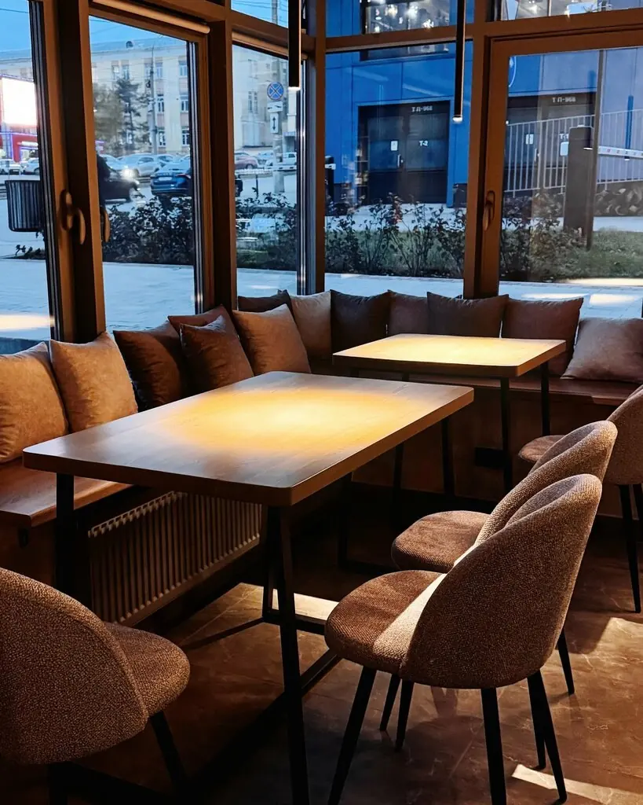
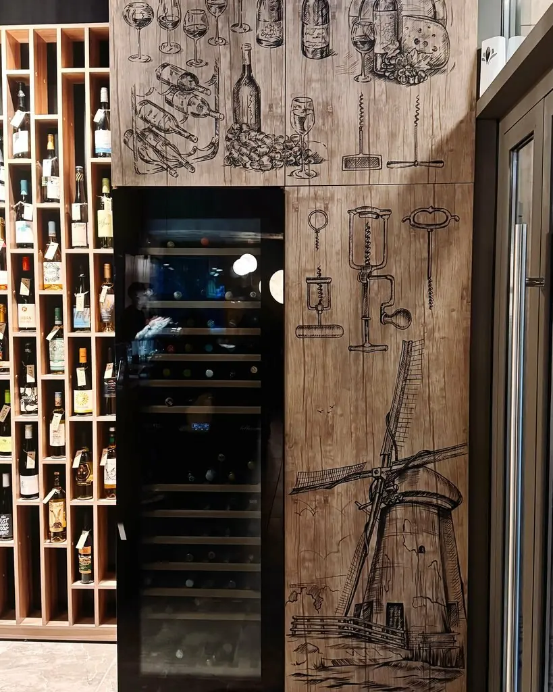
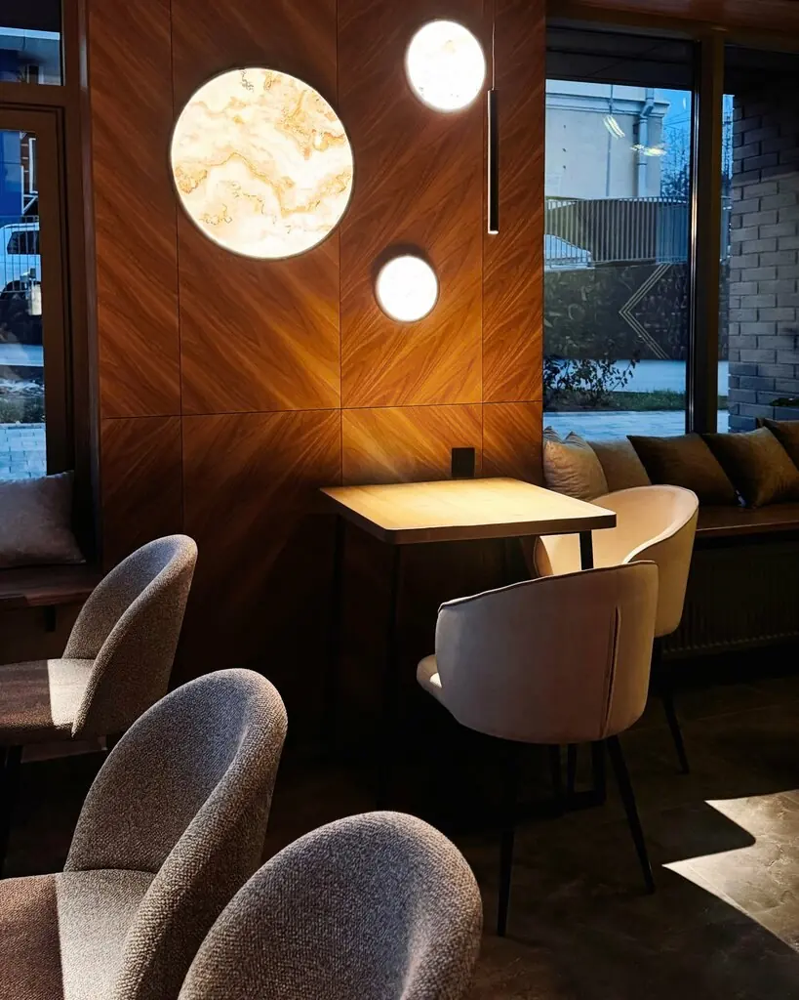
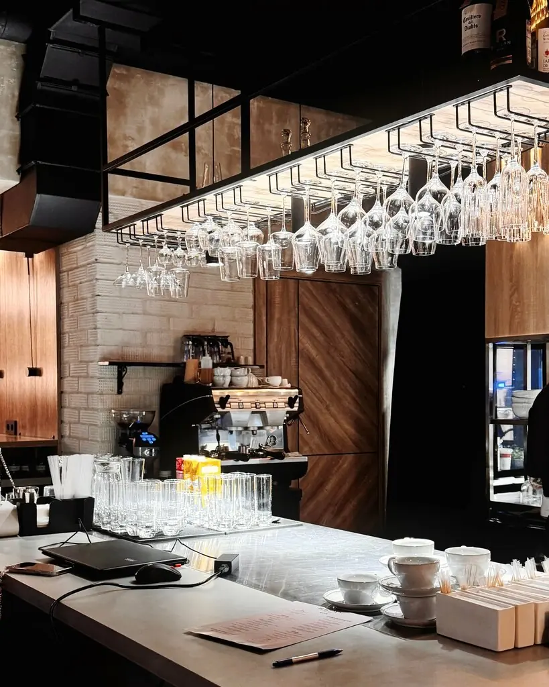

Buro2.12

Ресторан авторской кухни: точные сочетания, тихий зал и завтраки до 16:00.
Рейтинг
5,0 · 291 оценка
5,0 · 291 оценка
Адрес
Карла Маркса, 210
Пн–чт 8:00–23:00
Пт 8:00–00:00
Сб 9:00–00:00, вс 9:00–23:00
Карла Маркса, 210
Пн–чт 8:00–23:00
Пт 8:00–00:00
Сб 9:00–00:00, вс 9:00–23:00
Спецификация блюд
А-1Татаки из тунца с чатни из огурца640 ₽
А-2Тёплый салат с ростбифом и трюфельным соусом640 ₽
А-3С кальмаром, перцем, мидией и сельдереем560 ₽
Б-1Казаречче с томлёной уткой и тыквой760 ₽
Б-2Казаречче с креветкой и спаржей820 ₽
В-1Львовский сырник с шоколадной глазурью380 ₽
Часть меню с Яндекс Карт, цены уточняйте у официанта.
Планировка



Нестандартные интересные сочетания, всё очень вкусно.Дина Ваганова
Одно из любимых мест города. Уютно и очень вкусно.Дарья Маслова
Вкусное место в центре города. Классно, что завтраки до 16:00.Светлана Бушмакина
Утверждено гостями
Ижевск, улица Карла Маркса, 210